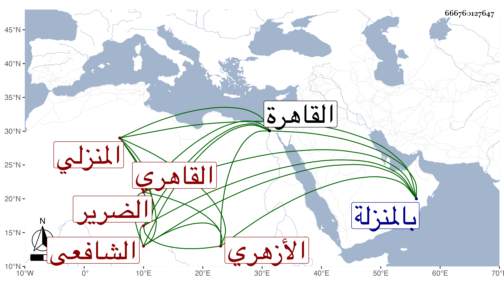

0902Sakhawi.DawLamic.ITO20230111-ara1.EIS1600.666760127647
Biography ID: 666760127647
179
أحمد بن عيسى بن محمد بن علي الشهاب المنزلي ثم القاهري الأزهري الشافعي الضرير ويعرف في ناحيته بعصفور وقد يصغر . ولد في سنة ثلاث وثلاثين وثمانمائة بالمنزلة ونشأ بها ثم تحول بعد بلوغه منها إلى القاهرة فقطن الأزهر وحفظ القرآن والمنهاج والرحبية وألفية ابن مالك والجرومية وأخذ في الفقه عن المناوي والعبادي بل وعن العلم البلقيني وغيرهم وفي الأصلين عن العلاء الحصني وكذا المعاني والبيان والعربية بل أخذ عن التقيين الحصني والشمني قليلا ولازم السنهوري في العربية ومن قبله الأبدي والشهاب السجيني في الفرائض والحساب وتزوج ابنته والسيد علي تلميذ ابن المجدي بل أخذ عن البوتيجي وأبي الجود وسمع على السيد النسابة وابن الملقن والنور البارنباري وناصر الدين الزفتاوي وأم هانئ الهورينية والحجاري والمحبين الفاقوسي والحلبي بن الألواحي والشمس الرازي القاضي الحنفي والجمال بن أيوب الخادم والبهاء بن المصري وغيرهم ، ولازم التردد لغير هؤلاء ، وحصل له ومد كف منه في سنة ثلاث وسبعين وهو فيما يظهر صابر وشاكر ولكن كثرت منازعاته في الدروس والمجالس مع يبس عبارته وفاهمته وعدم تأدبه سيما بعد انفكاكه .
